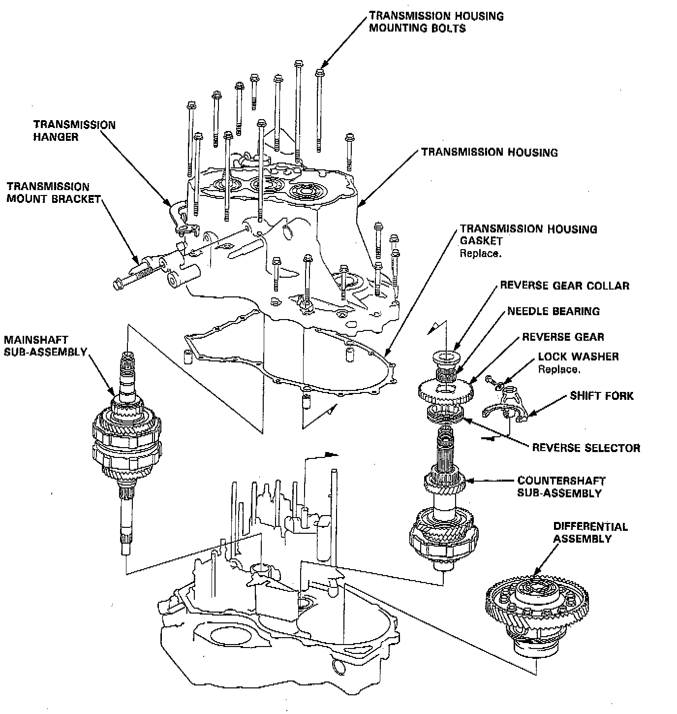
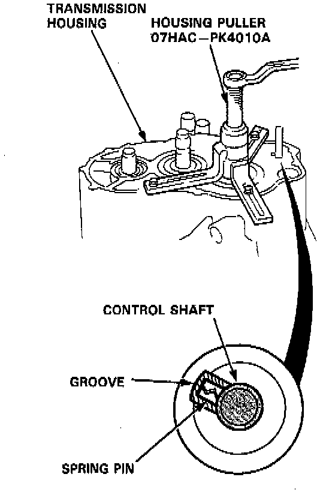
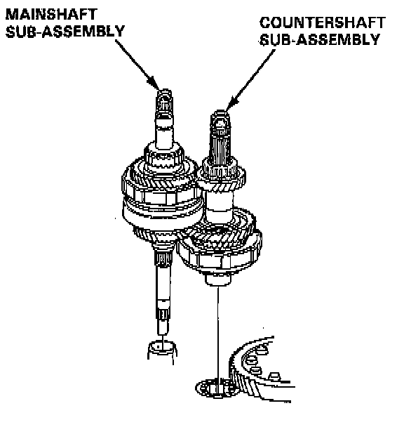

Transmission Housing
TOOLS REQUIRED- 07HAC-PK4010A Housing Puller
- Or Equivalent

NOTE:
- Clean all parts thoroughly in solvent or carburetor cleaner and dry with compressed air.
- Blow out all passages.
- When removing the transmission housing, replace the following:
- Transmission housing gasket
- Lock washer
1. Remove the transmission mount bracket.
2. Remove the transmission housing mounting bolts and hanger.
3. Align the spring pin of the control shaft with the transmission housing groove by turning the control shaft.

4. Install the special tool on the transmission housing, then remove the housing as shown.
5. Remove the countershaft reverse gear with the collar and needle bearing.
6. Remove the lock bolt securing the shift fork, then remove the fork with the reverse selector from the countershaft.

7. Remove the countershaft and mainshaft subassembly together.
8. Remove the differential assembly.